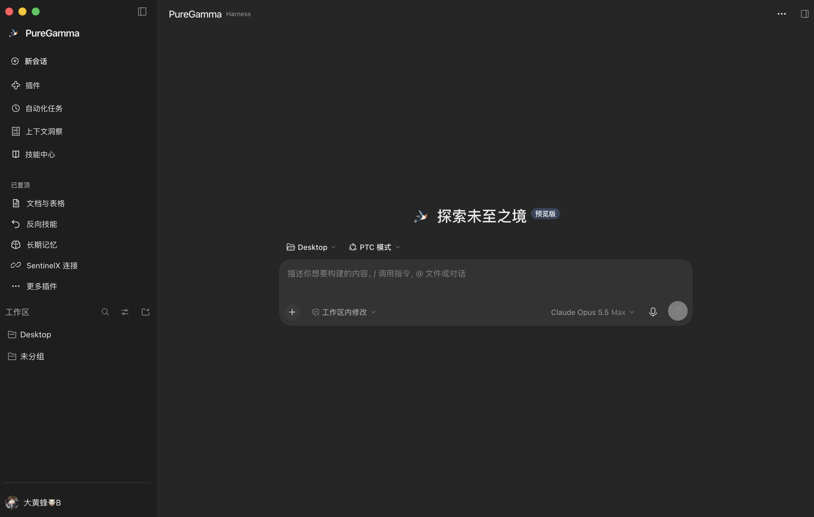

⌘
macOS Intel x64
ZIP · Intel x64
Unzip. Run Install PureGamma Harness.command in the extracted folder once, then open the app.
One focused place for conversations, models, and the tools behind your work. This release bundles dsh-purge Clean with neutral defaults and fixes the rc.2 prompt variable error.

THE ACTUAL HARNESS DESKTOP ↗Discover the complete DeepSeek Harness community directory indexed by DSH Marketplace. Search every listing and follow the tools that fit your workflow.
Independent community index from DSH Marketplace ↗. Listings and compatibility are maintained outside PureGamma. Review each plugin before installation.
Choose a direction to filter the full directory. Each result links to its community listing or source repository.
All downloads are served directly from the PureGamma Harness GitHub release. Current tag: v0.2.1-rc.2-purge.2.
Checking the published GitHub release…
Read release notes ↗ZIP · Intel x64
Unzip. Run Install PureGamma Harness.command in the extracted folder once, then open the app.
ZIP · Apple Silicon
Download for Apple Silicon ↗ Unzip, run the adjacent installer command, then select dsh-purge Clean → Apply and restart.
EXE · Windows x64
Run the EXE. If the app opens, close it. In the install folder run resources/pg-harness/Install PureGamma Harness.cmd, then reopen. In dsh-purge, open Clean and select Apply; restart and start a new chat.
This prerelease includes dsh-purge Clean v1.1.71-puregamma.4 with neutral defaults and fixes the rc.2 {{cwd}} prompt variable error. The macOS apps are ad-hoc signed and not Apple-notarized; the Windows installer is unsigned.